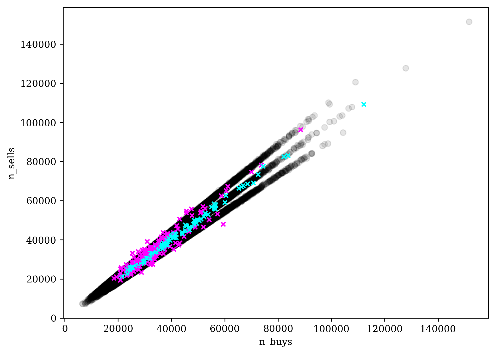

A comparison of some structural models of private information arrival
Table of Contents
Jefferson Duarte, Edwin Hu, and Lance Young
Paper
Latest version available at SSRN: https://ssrn.com/abstract=2564369
Data
https://www.dropbox.com/s/45b42e89gaafg0n/cpie_data.zip?dl=1
The data contains several files:
cpie_daily.csveo_yearly.csvdy_yearly.csvgpin_yearly.csvowr_yearly.csv
Daily
cpie_daily.csv is sorted by permno and date:
| permno | year | date | cpie_pin | cpie_dy | cpie_gpin | cpie_owr | cpie_mech | ret_o | ret_d | y_e | n_buys | n_sells | turn |
| 10057 | 1993 | 19930104 | 0.0050 | 0.608 | 0.011 | 0.85 | 0 | -0.007 | -0.014 | -0.35 | 4 | 7 | 11 |
| 10057 | 1993 | 19930105 | 0.0000 | 0.003 | 0.071 | 0.88 | 0 | 0.011 | 0.012 | 0.93 | 2 | 0 | 2 |
| 10057 | 1993 | 19930106 | 0.0007 | 0.212 | 0.014 | 0.91 | 0 | -0.016 | -0.014 | -0.38 | 3 | 5 | 8 |
| 10057 | 1993 | 19930107 | 0.0257 | 0.131 | 0.433 | 0.82 | 0 | 0.001 | 0.015 | 0.26 | 8 | 4 | 12 |
| 10057 | 1993 | 19930108 | 0.0962 | 0.946 | 0.003 | 0.72 | 1 | 0.001 | -0.007 | -0.57 | 4 | 10 | 14 |
| 10057 | 1993 | 19930111 | 0.0011 | 0.009 | 0.281 | 0.69 | 0 | 0.007 | -0.003 | 0.41 | 5 | 1 | 6 |
| 10057 | 1993 | 19930112 | 0.9448 | 0.226 | 0.528 | 0.97 | 1 | 0.016 | 0.022 | 0.11 | 14 | 12 | 26 |
| 10057 | 1993 | 19930113 | 0.4594 | 0.973 | 0.001 | 0.82 | 1 | 0.008 | -0.020 | -0.62 | 4 | 12 | 16 |
| 10057 | 1993 | 19930114 | 0.0006 | 0.101 | 0.044 | 0.88 | 0 | -0.008 | -0.015 | -0.33 | 4 | 4 | 8 |
cpie_pin corresponds to \(CPIE_{PIN}\) in the paper (the PIN model).
cpie_dy corresponds to \(CPIE_{DY}\) in the paper (the DY model).
cpie_gpin corresponds to \(CPIE_{GPIN}\) in the paper (the GPIN model).
cpie_owr corresponds to \(CPIE_{OWR}\) (the Odders-White and Ready
(2008) model).
cpie_mech is the \(CPIE_{Mech}\), which is a dummy variable
defined as:
ret_d, ret_o, and y_e correspond to \((r_d,r_o,y_e)\).
n_buys and n_sells corresponds to the \(B\) and \(S\), and turn
is the sum, corresponding to \(turn\).
PIN Model
pin_yearly.csv is sorted by permno and year:
| permno | year | a | eb | es | u | d |
| 10057 | 1993 | 0.2301 | 5.4697 | 5.7433 | 10.5068 | 0.6052 |
| 10057 | 1994 | 0.0810 | 6.9449 | 6.6969 | 34.4076 | 0.3984 |
| 10057 | 1995 | 0.2692 | 14.2371 | 16.8493 | 33.2753 | 0.8156 |
| 10064 | 1993 | 0.2502 | 45.7045 | 41.3353 | 71.4708 | 0.6673 |
| 10064 | 1994 | 0.2835 | 25.8929 | 27.7240 | 40.0622 | 0.6076 |
| 10064 | 1995 | 0.1656 | 32.7579 | 38.9675 | 94.3707 | 0.8213 |
| 10064 | 1996 | 0.1910 | 27.7305 | 39.9372 | 94.2733 | 0.8373 |
| 10071 | 1993 | 0.2755 | 15.2707 | 14.3848 | 22.8094 | 0.6077 |
| 10071 | 1994 | 0.2000 | 12.8310 | 14.1135 | 24.6615 | 0.6733 |
a is \(\alpha\), eb is \(\varepsilon_B\), es is \(\varepsilon_S\), u is \(\mu\), and d is \(\delta\).
DY Model
dy_yearly.csv is sorted by permno and year:
| permno | year | a | eb | es | ub | us | d | tn | sb | ss |
| 10057 | 1993 | 0.38 | 4.67 | 3.55 | 10.63 | 5.00 | 0.21 | 0.20 | 7.67 | 7.74 |
| 10057 | 1994 | 0.30 | 4.52 | 4.84 | 10.81 | 9.21 | 0.51 | 0.07 | 26.43 | 32.65 |
| 10057 | 1995 | 0.43 | 11.92 | 9.46 | 26.59 | 10.60 | 0.40 | 0.24 | 21.59 | 25.63 |
| 10064 | 1993 | 0.36 | 35.98 | 37.14 | 31.10 | 69.81 | 0.76 | 0.15 | 82.19 | 30.60 |
| 10064 | 1994 | 0.49 | 16.74 | 24.25 | 21.83 | 45.73 | 0.88 | 0.24 | 27.10 | 21.28 |
| 10064 | 1995 | 0.37 | 27.68 | 31.84 | 39.64 | 43.77 | 0.59 | 0.09 | 103.78 | 39.22 |
| 10064 | 1996 | 0.21 | 26.46 | 38.54 | 78.89 | 124.34 | 0.87 | 0.02 | 226.61 | 623.26 |
| 10071 | 1993 | 0.36 | 11.91 | 11.46 | 11.65 | 17.20 | 0.60 | 0.20 | 23.35 | 14.43 |
| 10071 | 1994 | 0.44 | 9.46 | 11.76 | 11.65 | 15.28 | 0.74 | 0.10 | 30.51 | 21.51 |
a is \(\alpha\), eb is \(\varepsilon_B\), es is \(\varepsilon_S\),
ub is \(\mu_B\), us is \(\mu_S\), d is \(\delta\), tn is \(\theta\),
sb is \(\Delta_B\), and ss is \(\Delta_S\).
GPIN Model
gpin_yearly.csv is sorted by permno and year:
| permno | year | a | r | p | eta | d | th |
| 10057 | 1993 | 0.30 | 6.51 | 0.62 | 1.00 | 1.00 | 0.44 |
| 10057 | 1994 | 0.17 | 2.27 | 0.85 | 1.00 | 0.40 | 0.51 |
| 10057 | 1995 | 0.28 | 2.89 | 0.92 | 1.00 | 0.48 | 0.54 |
| 10064 | 1993 | 0.19 | 7.25 | 0.93 | 0.75 | 0.57 | 0.53 |
| 10064 | 1994 | 0.16 | 8.48 | 0.87 | 0.78 | 0.48 | 0.50 |
| 10064 | 1995 | 0.18 | 5.88 | 0.93 | 0.77 | 0.76 | 0.44 |
| 10064 | 1996 | 0.11 | 2.41 | 0.97 | 0.90 | 0.59 | 0.44 |
| 10071 | 1993 | 0.21 | 6.46 | 0.83 | 0.79 | 0.60 | 0.52 |
| 10071 | 1994 | 0.13 | 5.01 | 0.85 | 0.88 | 0.80 | 0.44 |
a is \(\alpha\), r is \(r\), p is \(p\), eta is \(\eta\), d is
\(\delta\), and th is \(\theta\).
OWR Model
owr_yearly.csv is sorted by permno and year:
| permno | year | a | su | sz | si | spd | spo |
| 10057 | 1993 | 0.7808 | 0.1886 | 0.4790 | 0.0226 | 0.0059 | 0.0101 |
| 10057 | 1994 | 0.4135 | 0.1548 | 0.5136 | 0.0298 | 0.0074 | 0.0108 |
| 10057 | 1995 | 0.7746 | 0.1368 | 0.4319 | 0.0251 | 0.0077 | 0.0000 |
| 10064 | 1993 | 0.2991 | 0.1227 | 0.3457 | 0.0248 | 0.0085 | 0.0072 |
| 10064 | 1994 | 0.6279 | 0.1516 | 0.3194 | 0.0222 | 0.0070 | 0.0047 |
| 10064 | 1995 | 0.7526 | 0.1865 | 0.3440 | 0.0241 | 0.0073 | 0.0009 |
| 10064 | 1996 | 0.6543 | 0.1391 | 0.3481 | 0.0299 | 0.0064 | 0.0000 |
| 10071 | 1993 | 0.7885 | 0.1390 | 0.4146 | 0.0148 | 0.0045 | 0.0054 |
| 10071 | 1994 | 0.6455 | 0.1417 | 0.4427 | 0.0132 | 0.0061 | 0.0050 |
a is \(\alpha\), su is \(\sigma_u\), sz is \(\sigma_z\), si is \(\sigma_i\), spd is \(\sigma_{pd}\), and spo is \(\sigma_{po}\).
New data
2013–2019 GPIN
and OWR estimates:
https://www.dropbox.com/s/6xaa3x5zbmvyyq1/pin-est-1319.zip?dl=1
Based on requests from other researchers we have updated our estimates beyond the sample period in our paper. These estimates may be used as starting points for your own estimation, or used as-is. We have done some basic quality checks with the estimates, but not to the full extent of the 1993–2012 sample from the paper. In the paper we also only used NYSE-listed stocks. If you have any questions, comments, suggestions, or find any issues please feel free to contact me. If you use these estimates in your work, please cite to our paper and website so that future researchers can find our work.
- Based on WRDS DTAQ Intraday Indicators.
- CRSP shrcd 10, 11 and exchcd 1, 2, 3, 4.
- Unlike the paper we do not remove distribution/event days for the OWR.
- Estimates are based on up to five random starting points.

Figure 1: Estimates example — XOM 2018 GPIN model